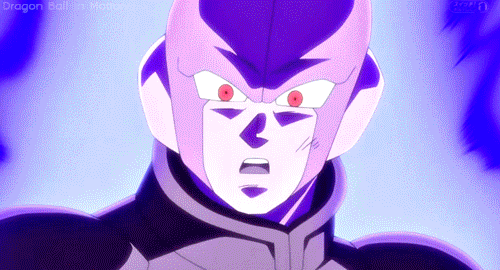
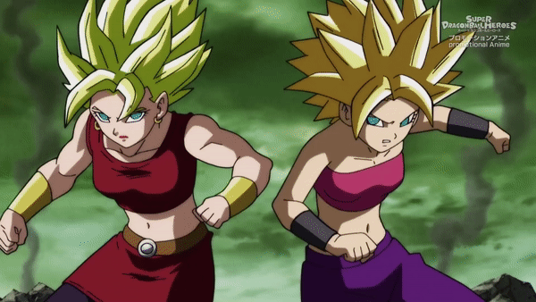
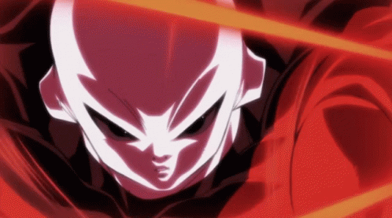
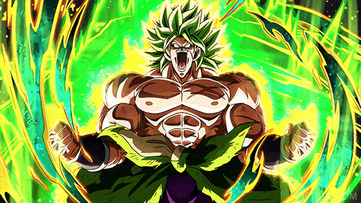

Curiosidades
.jpg)
Os pinípedes são os meus animais marinhos favoritos, e o principal motivo do meu interesse nessa área.

O elefante marinho é considerado o maior pinípede do mundo, possuindo uma camada de gordura super densa.

Os Peixe-bois tem a fisionomia de pinípedes, mas eles são parte do grupo sirênios, que são mamíferos aquáticos herbívoros.

Os nudibrânquios que fazem parte dos moluscos gastrópodes, e são conhecidas pelas suas cores exóticas.

Esse é o Jorunna Parva, um nudibrânquio apelidado de coelho do mar devido a sua aparência.

Apesar da sua aparência fofa, algumas nudibrânquias tem um sistema de defesa contra predadores semelhante aos cnidários, podendo causar queimaduras quando se encontram em posição de defesa.

A Dynastinae é uma subespécie de besouros conhecida como besouro-rinocerontes, caracterizada especialmente pelo seus chifres e tamanho.

Esses chifres são encontrados apenas em besouros machos, e são utilizados por eles para a disputa pelo acasalemento.

Os insetos são a maior classe animal do mundo, possuindo mais de 800.000 espécies conhecidas.

A restauração da cidade de Pompeia é um dos maiores alcanços da arqueologia. Sendo descoberta no final do século 16, os trabalhos arqueológicos começaram apenas em 1748.

As Linhas de Nasca são um dos maiores mistérios arqueológicos. São geoglifos encontrados no deserto de Sechura, feitas por uma sociedade Nasca nos anos de 500 a.C. e 500 d.C, que até hoje o significado não fora desvendado.

Hitto, o guerreiro assassino do Universo 6!

Caulifla e Kale. Essas duas Saiyajins deram muito trabalho, principalmente depois que se fundiram!

O Jiren é casca grossa, batalha épica do Torneio do Poder!
